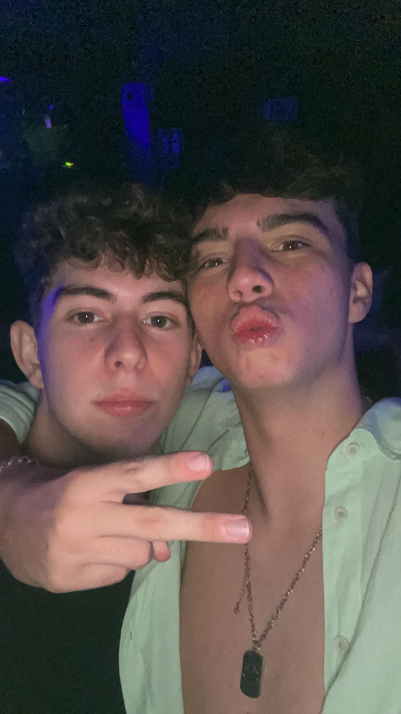
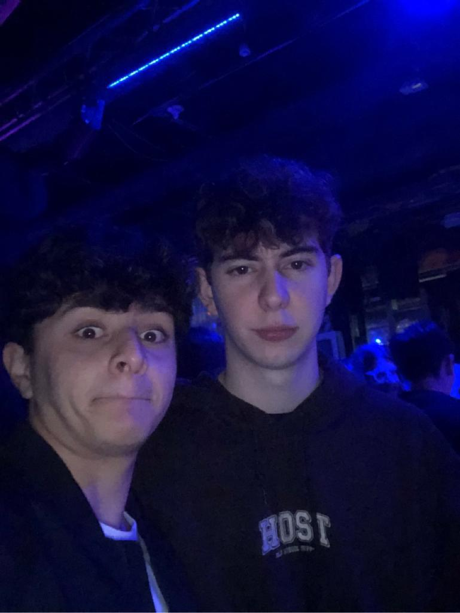
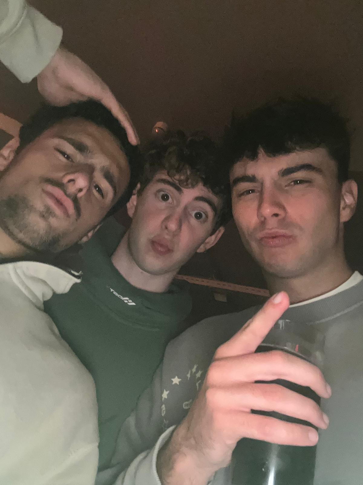
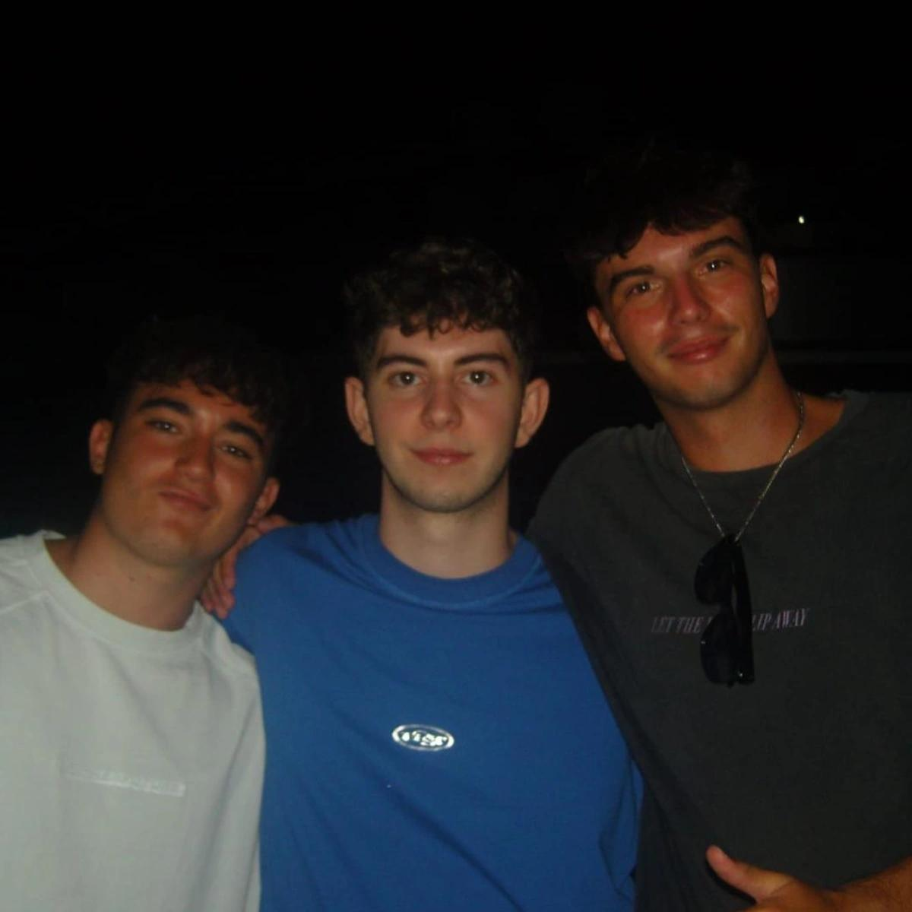
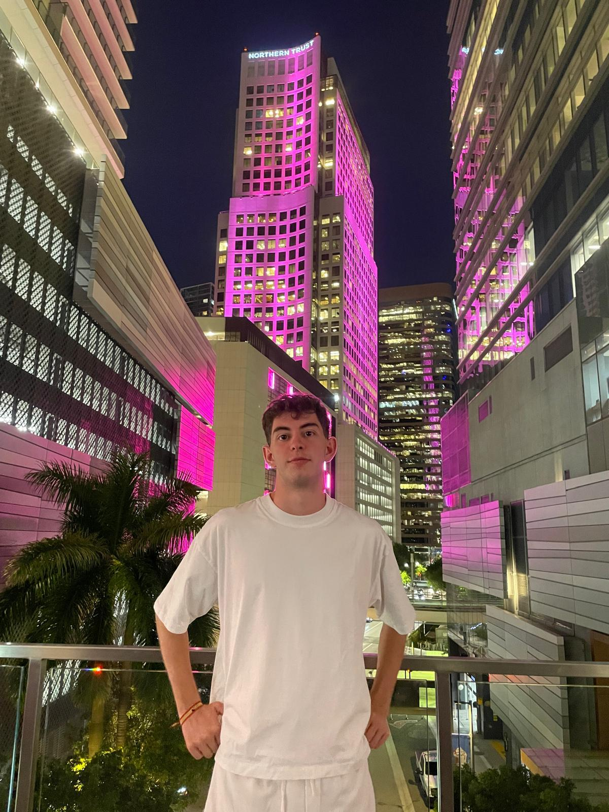
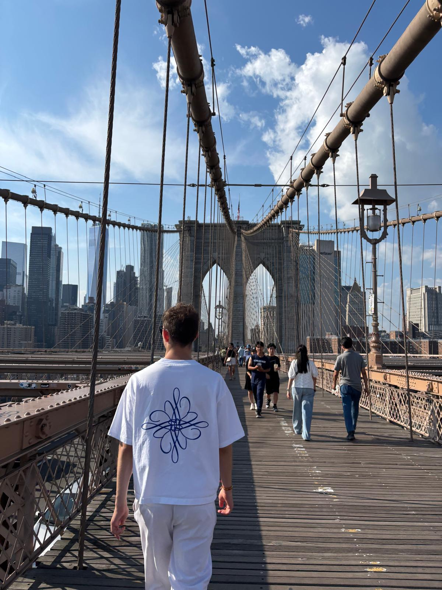

Mateo
Medio | Dorsal 4
Mateo, conocido también como jugador sin sangre. Es ese tipo de jugadores que tiene rota la X, no la
pasa ni por un croissant de su tierra natal. Sus tiros destacan por ser más flojitos que el pedo de
un marica, aunque rara vez se produce este proceso ya que se la suelen quitar antes.
Si le tuviéramos que catalogar con una palabra, flojo; en dos, muy flojo. No salta de cabeza, no mete el pie, tampoco va fuerte a los duelos… No obstante, no todo de este jugador es malo ya que es experto en dormir y en no salir de su casa en semanas.
Goza de un aura inexplicable, totalmente necesario este tipo de jugadores en un equipo como Skynna
Si le tuviéramos que catalogar con una palabra, flojo; en dos, muy flojo. No salta de cabeza, no mete el pie, tampoco va fuerte a los duelos… No obstante, no todo de este jugador es malo ya que es experto en dormir y en no salir de su casa en semanas.
Goza de un aura inexplicable, totalmente necesario este tipo de jugadores en un equipo como Skynna
Galería





